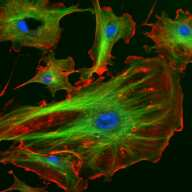
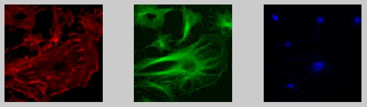
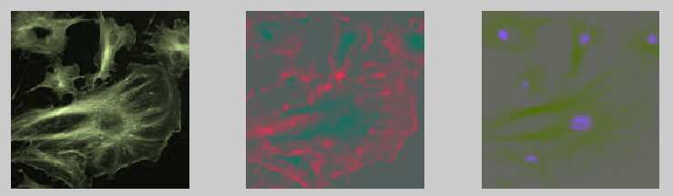

FAQ
Frequently asked questions (classic Vischeck FAQ).
Colorblindness
Is there a cure for colorblindness?
No. Color blindness is almost always caused by an inherited condition that alters the photoreceptors (cone cells) in the eye. There is no way to restore normal function to these cells.
What causes colorblindness?
See Webexhibits for an excellent description of the various causes and types of color blindness: https://www.webexhibits.org/causesofcolor/2A.html.
You might also like to read this archived article by Alex Wade: https://web.archive.org/web/20060129104233/http://www.vischeck.com/info/wade.php.
I need to pass a color blindness test for work. What can I do?
Some jobs require their employees to take a color blindness test (often using the Ishihara plates). These tests are required by, among others, the FAA, the coastguard and most military and emergency services. Such tests generally prohibit the use of colored contact lenses or other devices that are claimed to alleviate the effects of color blindness. Unfortunately, if you really are color blind, there is very little you can do to pass these tests.
Will my child inherit color blindness?
Color blindness is usually caused by a problem in a gene carried on the X chromosome. Men do not pass their X chromosomes onto their sons, so a color blind man cannot pass his color blindness onto his son. Women, having two X chromosomes, can carry the color blindness gene and never know it. If there are men on the mother's side of the family who are color blind, there is a chance that her child will inherit this gene. It will usually only cause color blindness if the child is a boy. Very rarely, a mother will have color blindness herself. This means that she has two “color blind” X chromosomes. If she has a boy, he is almost certain to be color blind. The fact that the color blindness gene is on the X chromosome is the reason why men are about ten to twenty times more likely to be color blind than women.
According to a color test I'm red-green color blind, but I can tell the difference between red and green — how can this be?
It is certainly possible to have a red-green color deficit but still be able to distinguish many shades of “red” from many shades of “green”. In fact, color tests carefully select specific shades of red and green that are indistinguishable to people with a color deficit. Also, there are various degrees of color blindness. Someone with a mild deficit would be able to distinguish more reds and greens than someone with a more severe deficit.
How many people are colorblind?
About 8% of all males have some sort of color deficit, but for females it is about 1/2%. (See https://webexhibits.org/causesofcolor/2C.html.)
Assuming that the current world population is 6,266,877,523 (see the archived US Census Bureau population clock) and that half of those are male, this gives:
6,266,877,523 * 0.5 * 0.08 + 6,266,877,523 * 0.5 * 0.005 = 266,342,295.
Of course, we don't really know the numbers so exactly, so we can round off our estimate. A good estimate is about 270,000,000 color-deficient people in the world today (January 6, 2003).
Will a color deficit prevent me from becoming a pilot?
Good color vision is important for recognizing various lights and signals important to a pilot, especially at night. In the United States, the FAA requires all pilots to have “the ability to perceive those colors necessary for the safe performance of airman duties.” You can get more information about the issue from: https://www.leftseat.com/baggish.htm.
Vischeck Classic and General Vischeck questions
Nothing happened when I hit “Submit”.
How big is the file you are uploading? How fast is your internet connection? Uploading large files will take time. For example a 1MB file will take about 3 to 4 minutes to upload using a normal 56k modem. Use compressed JPEG files to reduce upload time.
The images don't show up properly: the next page appears but my images aren't on it, just some “broken image” icons.
Vischeck will accept “most common image formats”. This includes JPEGs, GIFs, BMPs, PNGs and most TIFFs. Unfortunately, Sod's law says that the format you just chose is unsupported.
We know there are currently problems with CMYK TIFFs, and some Adobe Illustrator, PDF and Postscript files. Vischeck uses the free ImageMagick image processing library and it doesn't handle everything.
We suggest that you try another format if you can. If not, send your small images to vischeck@vischeck.com and we’ll see if we can sort them out for you.
The images popped up but the simulated version is a funny color or too blurred or too small.
The default setting for the color simulation model is “deuteranope - red/green color blind”. If you just want to simulate the effect of distance, you have to select the “Normal” color vision type.
Note that Vischeck shows you how the image you just submitted would look at a distance — that is, the actual image that you submitted as it would appear on a normal computer screen. If it's a tiny image, it will become very blurred very quickly because that's what happens to small things at a distance.
Also, to save processing power and download time, large images are resized before processing. The maximum size is 410x410 pixels. If you submitted a big 1280x1024 pixel screenshot, the simulation will operate on a smaller version. Get around this by breaking critical parts of the image up into smaller chunks and running separate Vischecks on each part.
VischeckURL
Why doesn't VischeckURL work on my site?
To simulate an entire webpage, VischeckURL must parse the HTML code of that web page. Parsing HTML and all the extras that have been tacked onto it (CSS, Javascript, Flash, ActiveX, etc.) is no trivial task. We concentrated on making VischeckURL robust when parsing plain HTML and added some functionality for working with CSS and Javascript.
When will VischeckURL work for my site?
We can’t set a firm update schedule. If you’d like update notifications, email vischeck@vischeck.com and ask to be added to the list.
Daltonize
How did Daltonize get its name?
Daltonize was named after John Dalton, the person who first wrote about colorblindness in 1794. See https://en.wikipedia.org/wiki/John_Dalton for more information.
How does it work?
Color images can be split into three color “dimensions”. One way to do this is to split them into the red, green and blue planes used to control video displays.


Another way is to split them into a bright/dark dimension, a red/green dimension and a blue/yellow dimension.

Most color blind people (dichromats) cannot see the red/green dimension of an image, but they still see the blue/yellow and light/dark dimensions. Daltonize analyzes the image to see if there is significant information (variation) in the red/green dimension. If there is, it tries to convert this into variations in the light/dark and blue/yellow dimensions.
Won't it just introduce other color confusions?
Daltonize tries to maximize the information available to dichromats. By shifting information from red/green variations into the light/dark and blue/yellow dimensions, there is a chance that it will reduce contrast in those dimensions. However, by analyzing the variations in all three color dimensions beforehand, these problems are kept to a minimum. In practice, we rarely see a case where Daltonize introduces color confusions where none existed before.
The colors look funny / unnatural
Our aim is to increase the visibility of things that would normally be invisible to color blind people. To do this, we vary the colors along the blue/yellow and light/dark dimensions. This can make some things look odd (for example, it might make red apples look a little bluish). You can make things look a little better by forcing Daltonize to only use the light/dark dimension to compensate for red/green variations. Ultimately, the trade off is between having things look a little strange and not being able to see them at all.
It doesn't seem to do anything.
If your image contains very little variation in the red/green dimension, Daltonize has no work to do. In other words, the image will be just as visible to a color blind person as to a normal. Congratulations!
You can force Daltonize to work harder by increasing the numbers you enter in the parameters box. Sometimes, the parameters you enter (the numbers underneath the filename) will prevent Daltonize from doing much to the image. Allowing it to use the blue/yellow dimension as well might result in a significant improvement.
What do the numbers in the boxes mean exactly?
The top number is the red-green stretch factor. It says how much the Daltonize algorithm will stretch the red-green axis of the input image. A large RG stretch will make reds redder and greens greener. Many people who are color blind actually have some limited red/green vision. By stretching the RG axis in an image, these people will see red/green variations that would not normally be visible to them. Setting this value to “1” means it will not change.
The other two numbers are the luminance and blue/yellow projection scales. These tell the Daltonize algorithm how much it is allowed to project red/green variations into the luminance and blue/yellow dimensions.
In particular, you might want to experiment with the blue/yellow projection scale. If images look “unnatural” after Daltonize, it is usually because variations in the blue/yellow dimension are being introduced. Setting this value to “0” (no projection onto the blue/yellow axis) will make Daltonized images look more natural at the expense of reducing the efficiency somewhat.
Why not distinguish reds and greens with different texture patterns / flashing colors / borders?
We tried to make the color transformation that Daltonize performs as subtle as possible. This has the advantage that the images it generates still look reasonable to someone who is not color blind. Our tests with other methods led us to conclude that the algorithm we present here is a good one. But if you come up with something even better we'd be interested to hear from you.
Why is it so slow?
Because a lot of people are using it and it’s written in Java and the image processing engines are mid-range home PCs operating over domestic DSL connections.
Nothing comes up when I submit an image
Probably the connection is timing out due to bandwidth and processing restrictions. There is also a chance that one of the image engines is down. In either case, wait a few minutes and re-submit the image. Avoid using large images or images in unusual formats: stick to JPG, BMP, PNG, GIF and TIF.
Can I use the images this generates in a book / newspaper article / web page / magazine / Hollywood movie?
In general, yes. Two restrictions: If you're going to make money out of the images you'll have to ask first. And if you use them for illustrative purposes, credit Vischeck and mention the website www.vischeck.com.
Can I get the Daltonize engine as a stand-alone package (like the Vischeck engine)?
Not at the moment. But it's all written in Java so in principle a stand-alone version could be released. If there’s demand, let us know.
My company would like to use this in a commercial product.
The Daltonize algorithm was originally developed at Stanford University. Commercial rights are held by the inventors. Contact daltonize_licence@vischeck.com for licensing information.
Still stuck? Contact vischeck@vischeck.com.